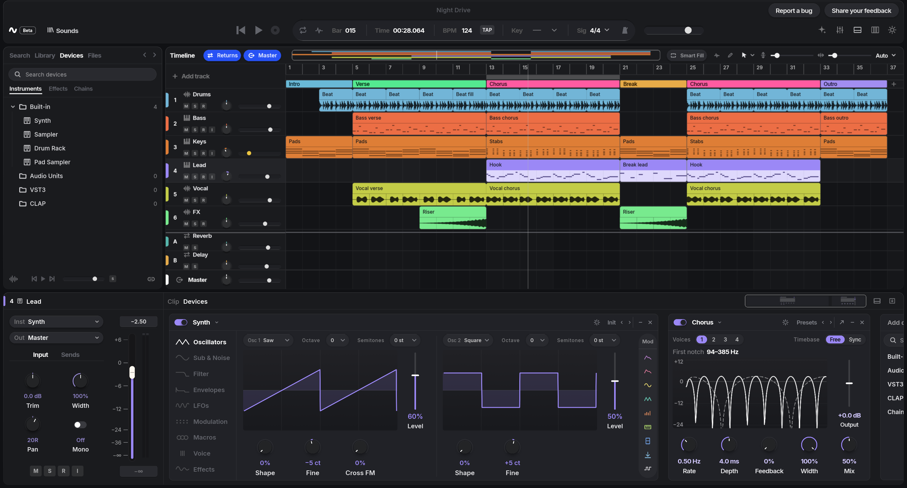

Device
DeviceYour studio.
No subscription.
A free, open-source DAW with a real-time C++ engine and a GPU-drawn interface.
macOS · Windows · Linux
AGPL-3.0
DeviceA free, open-source DAW with a real-time C++ engine and a GPU-drawn interface.
